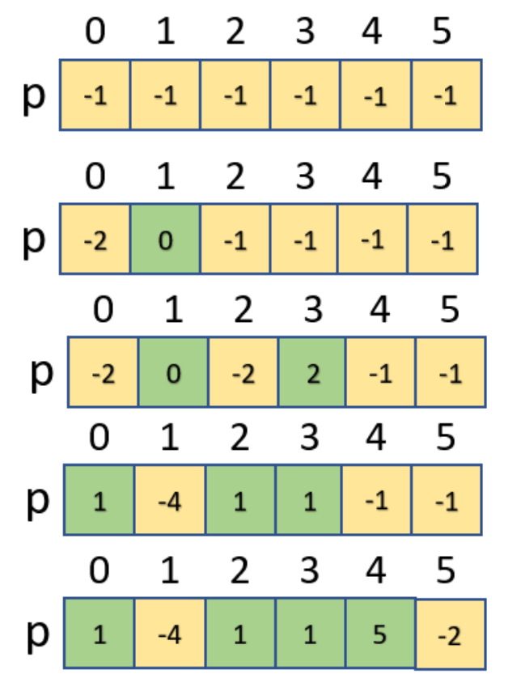

# 並查集 (Disjoin-Set Union)
# 基礎觀念
並查集 是一種樹形的資料結構，用於處理不交集的 ** 合併 (union) 及查詢 (find)** 問題。
並查集 可用於查詢網路中兩個節點的狀態， 這裡的網路是一個抽象的概念， 不僅僅指網際網路中的網路， 也可以是人際關係的網路、交通網路等。
並查集 除了可以用於查詢 網路 中兩個節點的狀態， 還可以用於數學中集合相關的操作， 如求兩個集合的並集等。
並查集 對於查詢兩個節點的 連線狀態 非常高效。對於兩個節點是否相連，也可以通過求解查詢路徑來解決，也就是說如果兩個點的連線路徑都求出來了，自然也就知道兩個點是否相連了，但是如果僅僅想知道兩個點是否相連，使用路徑問題來處理效率會低一些，並查集就是一個很好的選擇。
# 程式碼範例
概念聽起來很複雜
但程式寫起來很容易喔
# 1. 找源頭
不管要查哪台電腦的源頭
我都可以透過不斷地「找到他的老大」、「找到他老大的源頭」來找到他的源頭
int find_root(int x) | |
{ | |
if(father[x]==x) return x; // 如果他自己就是他那群的源頭，就回報他自己的編號 | |
int root=find_root(father[x]); // 找出他老大的源頭 | |
father[x]=root; // 把他的 boss 也改成終極 boss (源頭) 的編號 | |
return root; | |
} |
# 2. 連接兩個群組
兩個不同的群組，有不同的源頭
要連接他們的話
我們要先把他們個別的源頭找出來
並且讓其中一個源頭「歸順」到另一個源頭
void union(int x, int y) | |
{ | |
int root_x=find_root(x); // 找到 x 的源頭 | |
int root_y=find_root(y); // 找到 y 的源頭 | |
father[root_x]=root_y; // 讓 x 的源頭歸順於 y 的源頭 (若要反過來也可以) | |
} |
最後就簡單啦
int main() | |
{ | |
for(int i=0;i<1000000;i++) father[i]=i;// 一開始大家的源頭都是自己 | |
while(1) | |
{ | |
cin>>指令 | |
if(指令是連接a與b){ | |
union(a, b); | |
} | |
else if(指令是問a與b是否相連){ | |
int root_a=find_root(a); | |
int root_b=find_root(b); | |
if(root_a==root_b) cout<<相連 | |
else cout<<不相連 | |
} | |
} | |
} |
# d831: 畢業旅行
# 敘述
這幾天，班上同學們無時無刻都熱烈討論著畢業旅行的地點。
小明說，如果要去六福村，可以順便去小人國；
小美說，如果去了恆春的話，墾丁就在幾十公里外了，一定也要去玩；
小華表示，小鬼湖跟大鬼湖好像很近，似乎都是很有趣的地方。
身為班長，聽到同學這麼多「去了哪裡也可以去哪裡」的資訊後，
你決定要為班上的同學們，找到一個能玩最多景點的畢業旅行。
# 思路
- 先假設全部每個點的根都為 - 1
- 當合併的根小於 0 時，就把其中一格記成此根的最多連結數，另一個紀錄根的位置

#include <iostream> | |
using namespace std; | |
int p[1000005]; | |
int n, m, mx, a, b; | |
int find_root(int x){ | |
if (p[x] < 0) return x; | |
else { | |
p[x] = find_root(p[x]); | |
return p[x]; | |
} | |
} | |
int main() { | |
while (cin >> n >> m){ | |
for (int i = 0; i < n; i++){ | |
p[i] = -1; // 初始化 | |
} | |
mx = 1; | |
for (int i = 0; i < m; i++){ | |
cin >> a >> b; | |
a = find_root(a); | |
b = find_root(b); | |
if (a != b){ // 不同才能加 | |
p[a] += p[b]; // 加總 | |
mx = max(mx, -p[a]); // 順道紀錄最大值 | |
p[b] = a; // 合併 | |
} | |
} | |
cout << mx << "\n"; | |
} | |
} |